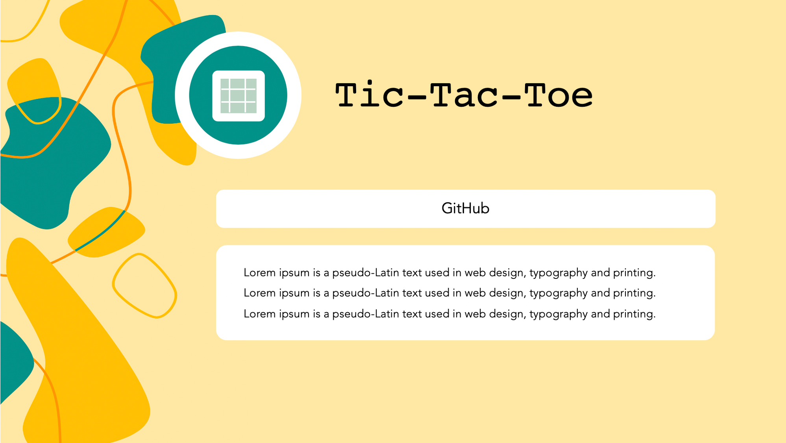
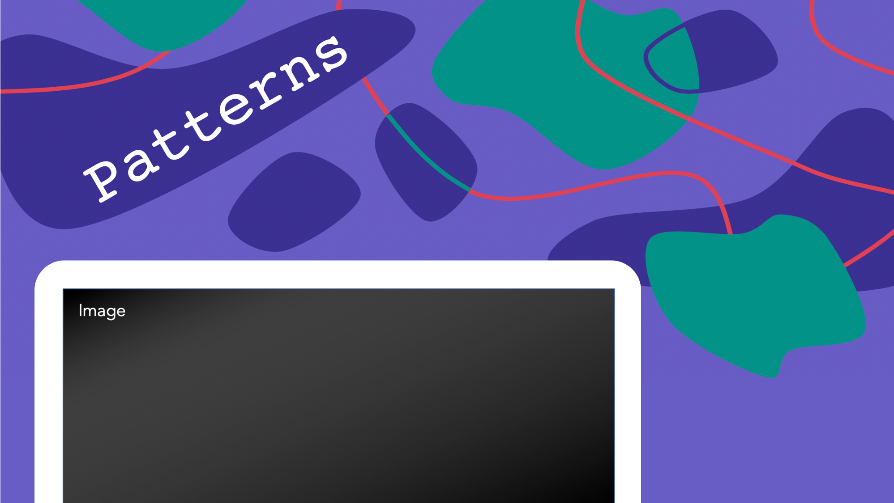
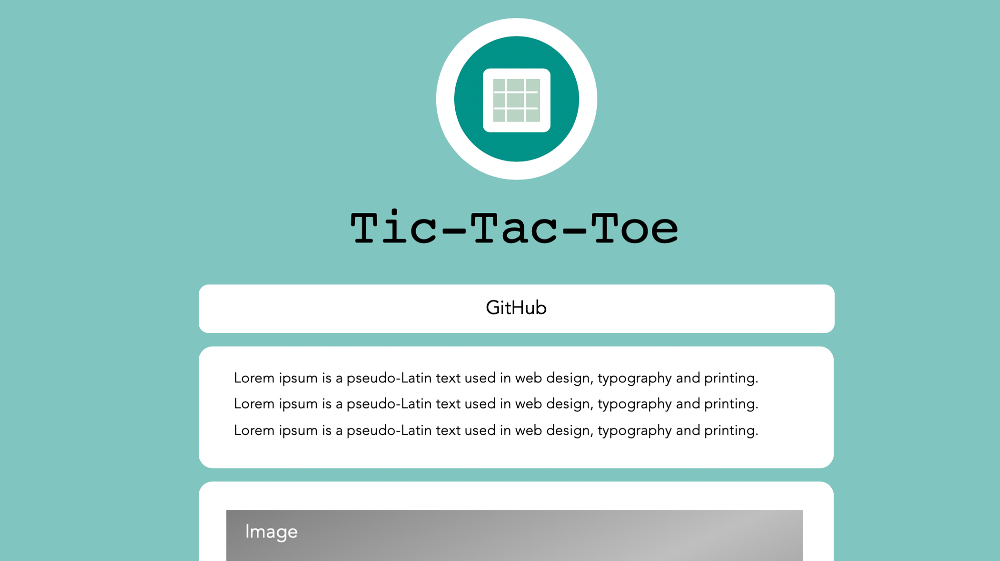

This Portfolio Site
About This Site
This is my portfolio site! I created it to have one place where I can discuss all of my projects and designs. I also wanted to create a site that I can continue to improve in order to practice old skills and learn new ones.
For the first iteration, I learned jQuery and Bootstrap and improved my JavaScript skills. Now, I am working on the second iteration, which I am building in ReactJS at faithletzkus.github.io. In the future, I want to continue to make improvements to it as I gain more ideas and grow as a developer.
Feature Breakdown
Splash Screen Animation
The Splash Screen Animation is the animation that happens once the first time the user loads the site. To accomplish this I used the browser's local storage and built off of an animation done by Alex Zaworski on CodePen, which can be found here.
Animated Scroll Bar in the Side Bar
I built this scroll bar to increase in length as you scroll down the page. Every time the page is scrolled, I call scroll() which changes the bar’s height to how far down the page you are / the height of the entire site.
Animated Scroll When User Clicks Section in the Side Bar
For this animation, I used jQuery to detect any time the user clicks a section in the sidebar. If so, I used the jQuery function animate with the property scrollTop. I set scrollTop’s value to the correct section’s height from the top of the page. Finally, I prevented the default behavior when you click a section(to jump directly to that section instead of animate) with the function preventDefault().
Curvy Line Dividers
The cure lines that divide each section of the site are Html path elements that I created myself.
Resume Section
For the resume section, I created Html pages for every section that I wanted, then created an html iframe on the main page initially set to show the first section. Whenever the clicks a different section in the resume header bar, its corresponding Html page shows up in the iframe. I came up with this idea and wrote it in vanilla JavaScript.
Responsiveness
I used Bootstrap to help with responsiveness when the user grows or shrinks the width of the page. I also used a Masonry grid in the projects and designs section to create a responsive grid.
Project and Design Icons
I drew most of these icons myself in Abode Illustrator except for the icons for This Site, Pets, Web Storyboards, and Patterns. This Site, Pets, and Web Storyboards were icons from PowerPoint Icons, and the Patterns icon was free on thenounproject.com.
Contact Icons
I used Font Awesome for my LinkedIn, GitHub, and Email icons.
Storyboard
Before creating this site, I storyboarded it in PowerPoint.
My first storyboard iteration for this site was a simple gray and white design. I liked the flow it had for the site; however, I thought my color choices were not a great reflection of myself or my personality. Accordinly, I took the colors I had picked out for the project and design boxes and reinvented the site to what it is now.
Below I have included some images showing the evolution of my first ideas to my final ideas.
Color Pallete
Project Icon Collage
These are the original icons I drew using Adobe Illustrator.
Splash Screen
About
View In Between Pages
Resume - Education Tab
Resume - Skills Tab
Contact
Projects
Footer
Project/Design Description Page
First Idea
Second Idea
Final Design
Although I really enjoy the look of the first two designs, I knew they would cause issues with the site's responsiveness. Also, I thought that a simpler design would better facilitate my goal for the Description Pages: to give more focus to the project/design.